世界の葉巻ニュース 特集
特集 — E.P. カリージョ
前弾「クラウンデッド・ヘッズ」で、若い反逆者たちの背後に立つ巨匠として登場した男がいました。デビュー作 フォー・キックス の製造を託された、ドミニカの工場 タバカレラ・ラ・アリアンサ の主です。本特集の主人公は、その人、エルネスト・ペレス＝カリージョ。
業界で彼は「ブティック・シガーのゴッドファーザー」と呼ばれます。キューバの上院議員の息子として生まれ、革命でマイアミへ。25歳でプロのジャズドラマーを夢見てニューヨークへ渡り、夢破れて家業に戻った男は、1990年代のシガーブームの頂点で自らのブランド ラ・グロリア・クバーナ（米国版）を全米のセンセーションに押し上げました。ところが1999年、彼はその王国を売ります。残って10年働き、57歳で退社。子どもたちと自分の名を冠した会社を興すと、60代で Cigar Aficionado の年間第1位を二度射止めました。そして2025年、売ったはずのブランドから、再び声がかかるのです。

本特集では、議員の父と亡命、叶わなかったドラマーの夢、1日で26,000本の注文が殺到したブームの現場、売却と残留の10年、57歳の再出発、家族の名前を刻んだ代表作の三部作、そして「三度目の握手」までを辿り、最後に日本での流通と価格を報告します。頂点に立つまで半世紀。再び頂点に立つまで、さらに四半世紀がかかりました。
本特集の事実関係は、専門誌・業界誌（Halfwheel、Cigar Aficionado、Cigar Journal、Cigar Coop、SmokingPipes、Cigar World、Vitola）、ブランド公式サイト（Casa Carrillo）、本人のインタビュー発言で裏取りした範囲に基づきます。生年や売却年など、媒体によって表記が揺れてきた項目は、一次資料の照合で確定した結論を採用し、揺れの由来にも触れました。裏の取れない逸話は採用していません。また、本特集に登場する ラ・グロリア・クバーナ は、断りのない限りペレス＝カリージョ家の米国版ブランドを指します。キューバの同名ブランド（ハバノス）とは別の葉巻です（第三章の検証欄参照）。日本国内の価格・販売状況は、当編集部が財務省の認可リストと国内販売店の掲載を照合した日本葉巻データベース（2026年11月13日時点）に基づきます。米国価格は当時の公表価格で、円換算は $1＝¥158 で計算しました。
◆ 一、議員の息子 ― キューバからマイアミへ
エルネスト・ペレス＝カリージョ Jr. は、1951年11月、キューバ西部のタバコの産地ピナール・デル・リオに生まれました。父 エルネスト Sr. は、米系の葉買い付け会社キューバン・ランド・リーフ・タバコでタバコ・バイヤーを務めた男です。1948年にハバナの小さな工場 エル・クレディト を買い、さらに政界へ進んで、1954年と1958年にキューバ上院議員に当選しました。選出地はピナール・デル・リオ。本人が後年、Cigar Aficionado のインタビューでそう語っています。
1959年、革命が一家の運命を変えます。父は追われ、一家はマイアミへ渡りました。少年だったエルネストの記憶には、空を飛ぶ戦闘機と街の戦車が残りました。父は当初、バーを営むなどして糊口をしのいだといいます。それでもタバコの仕事は捨てなかった。1968年、リトルハバナの目抜き通りカジェ・オチョに エル・クレディト・シガー を開き、1972年には米国版 ラ・グロリア・クバーナ を始めます。商標は、キューバ時代に近隣にあった同名の工場にちなんで父が登録したものでした。
器は父が残しました。工場とブランドです。しかしその中身――ブレンド――を作り替えたのは、息子の側でした。もっとも、その息子が家業に身を入れるまでには、遠回りが必要だったのです。
◆ 二、ドラマーの夢 ― スティックを置いた25歳
若いエルネストの情熱は、葉巻ではなくジャズにありました。19歳で結婚し、父の工場を手伝いながら、副業でドラムを叩いていたと本人が語ります。「19歳で結婚したので、副業があった。音楽を演奏することだ。私はドラマーだった」。影響を受けたドラマーは、トニー・ウィリアムスとバディ・リッチ。ドラムは趣味ではなく、家計を支える仕事の一つだったのです。
25歳のとき、彼は本気でプロを目指し、ニューヨークへ渡ります。オーディションとギグを転々とし、憧れのサックス奏者スタン・ゲッツのオーケストラのドラマーの椅子を狙ってオーディションも受けました。しかし椅子は掴めず、彼はマイアミへ戻ります。本人の言葉が残っています。「私にとってマイアミは踏み台のはずだった。ニューヨークでジャズミュージシャンとして成功する前の」。踏み台のつもりだった街が、彼の本舞台になりました。
転機は1976年、父がエル・クレディトを手放そうとしたときだったとされます。彼は父と共に工場で働くようになり、1980年4月8日、父の死去に伴って29歳で工場を引き継ぎました。箱には、キューバ時代のオリジナルのアートワークを復活させたといいます。そして彼は、葉巻人生の起点を今もこう語ります。「もう54年（葉巻の仕事を）生きてきた。もう54年、同じことをやりたい。これは素晴らしい仕事だ」。
ドラムは、彼のブレンド哲学の言葉にも生きています。葉巻専門商社 SmokingPipes のインタビューで、彼はこう語りました。「ミュージシャンだった頃は、1日6〜7時間練習した。葉巻作りも同じで、常にブレンドで"練習"している。4/4拍子や3/4拍子に慣れた耳に5/4や7/4が来れば、音楽のリズムは全部変わる。葉巻も同じだ」。彼のブレンド論の核は「直線的（linear）にしないこと」。点火した瞬間から複雑さが育っていくこと。「何も語りかけてこない葉巻は作りたくない。何かを語らなければならない（It's got to say something）」。スティックを置いた手は、葉の上で拍子を取り続けているのです。
◆ 三、マイアミ・ブーム ― 1日で26,000本
1982年頃、彼はキューバのダビドフに触発されて、ラ・グロリア・クバーナ のブレンドに本格的に取り組み始めます。父の器に、自分の味を流し込む作業でした。1990年には大胆な新レシピ――エクアドル産スマトラのラッパー、ニカラグアのバインダーとフィラー――を発表し、これが今日のクラシックにつながる当たりブレンドになります。
爆発は1992年です。Cigar Aficionado 創刊号で ウェイベル（Wavell） が90点を取ると、1日で26,000本の注文が入りました。カジェ・オチョの工場の年産は約100万本規模。ウェイベル だけのバックオーダーが25,000本に達し、客によっては6か月待ちになりました。本人は後年、同誌のマービン・シャンケンとの対談でこう振り返っています。バックオーダーが何件あるか自分でも分からなくなり、買うのを諦める代わりに、工場へ「巡礼」に来る人々までいた、と。ウェイベル の価格は約3年で $1.95（約¥308）から $2.85（約¥450）へ上がりましたが、需要は落ちませんでした。
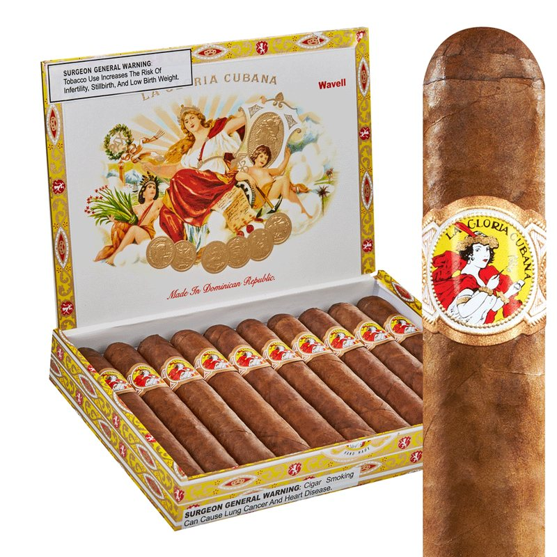
需要に応えるため、舞台はドミニカへ広がります。1995年11月に話をまとめ、1996年4月8日からサンティアゴで生産を開始しました。奇しくも4月8日は、1980年に彼がマイアミの工場を引き継いだ日と同じ月日です。1996年の生産はマイアミ約120万本、ドミニカは4〜12月だけで220万本。地元のブティックは、全国ブランドへと姿を変えていきました。
キューバにも ラ・グロリア・クバーナ があります。1885年に生まれたハバノスのブランドで、こちらが「本家」です。米国版は、ペレス＝カリージョ家がマイアミで築いた完全な別ブランドであり、味も作り手も異なります。同名の二重構造は、葉巻の世界では珍しくありませんが、混同は禁物です。本特集の ラ・グロリア・クバーナ は、すべて米国版を指します。そして皮肉なことに、この区別こそが、後の「三度目の握手」の前提になります。彼が売ったのは、キューバの名ではなく、自分で育てた米国のブランドだったのですから。
◆ 四、売却と残留の10年 ― 太リングと弟子
1999年7月2日、スウェディッシュ・マッチがエル・クレディト・シガーズの買収に合意し、買収は同年8月に完了しました。対象にはマイアミとドミニカの両工場と、350人の従業員が含まれます。なお「2000年に売却」とする紹介も散見されますが、これはスウェディッシュ・マッチがゼネラル・シガーの過半を取得した2000年、およびエル・クレディトがゼネラル・シガーへ統合された2001年との混同とみられます。売却は1999年です。
彼は会社を去りませんでした。売却後も事業を率い、ゼネラル・シガー傘下で2009年3月まで、約10年を過ごします。この10年は空白ではありません。売却と同じ1999年、彼は太リングの セリエ R を投入します。60リングという当時としては異例の太さは2000年代初頭に大ヒットし、太リング時代の扉を開けたと評されます。公式の人物紹介も、彼の革新として「60リングゲージの葉巻の導入」を挙げています。今日の彼の INCH（60超の極太ライン）へ続く系譜は、ここから始まります。
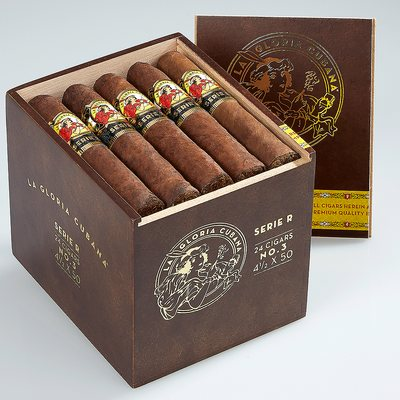
人材の足跡も残しました。後に CAO のブレンダー／アンバサダーとなる リック・ロドリゲス は、ゼネラルのマスター研修でカリージョに師事し、カリージョが退社した後の2008年、ラ・グロリア・クバーナのブレンドチームに入ったと伝えられます。自分の椅子を、弟子に譲るようにして去ったわけです。退社の時期は競業避止（ノンコンピート）の満了と重なると業界では語られてきましたが、契約の細部は非公開です。いずれにせよ、2009年3月、彼は57歳で古巣を離れます。そして今日の米国版 ラ・グロリア・クバーナ は STG 傘下にあり、彼のブレンドではありません――2025年の例外を除いては。その例外は、第七章で述べます。
◆ 五、57歳の再出発 ― 子どもたちと「同盟」の工場
独立を持ちかけたのは、子どもたちでした。娘の リセット は後年、当時の心境をこう語っています。「（エル・クレディトを）スウェディッシュ・マッチに売ったことで、私たち家族がもう葉巻ビジネスを続けられないのではないかと恐れていた」。2009年、彼は娘 リセット、息子 エルネストIII と共に EPC シガー を創業します。独立は、父の悲願であると同時に、家の仕事を絶やしたくないという子どもたちの思いの結実でした。
2009年4月、サンティアゴのフリーゾーンに40,000平方フィートの独立棟を確保し、工場を タバカレラ・ラ・アリアンサ と名付けます。「アリアンサ（同盟）」は、家族の協働を象徴する名でした。本人は当時を振り返って、「事業主として、そして葉巻ブレンダーとして、ゼロから学び直すようなものだった」と語っています。子どもたちの布陣も強力でした。エルネストIII はマッキンゼーと KKR を経た経営畑。リセット はコロンビア大学ロースクールを出た弁護士で、9歳から工場でラベル貼りを手伝ってきた生え抜きです。
第一弾は限定品 エディシオン・イナウグラル 2009。二重バインダーという異例の構成で、15万本（10本入り15,000箱）、$13（約¥2,054）で2009年12月に発売されました。定番のコアラインは2010年春に続きます。57歳の再出発は、しかし「かつての王の帰還」として消費されるためのものではありませんでした。彼が次に作ったのは、家族の名前を冠した、全く新しい代表作の三部作だったのです。
◆ 六、頂点の二度 ― 家族の名を刻んだ三部作
2012年、彼は Cigar Aficionado の殿堂（Hall of Fame）に選出されます。創業からわずか3年。つまり彼の第二幕は、「伝説」の地位を確定させた上での挑戦でした。その挑戦の結実が、「ペレス＝カリージョ・シリーズ（ファミリー・シリーズ）」と総称される三部作です。
第1作 ラ・ヒストリア（La Historia）（2014年）は、家族への献辞のラインです。サイズ名はすべて家族の名。エル・セナドールは父（元上院議員）、ドーニャ・エレーナは妻エレーナ、E-III は息子エルネストIII、そして2015年に加わったレガリアス・デ・セリアは妻の祖母にちなみます。E-III は Cigar Aficionado の Top 25 of 2014 で第2位・95点を獲得しました。
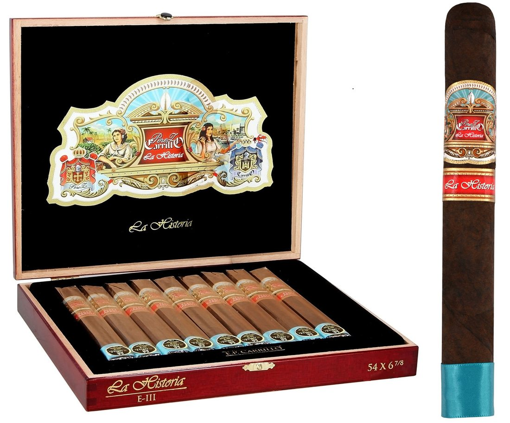
第2作 アンコール（Encore） は、EPC 初のニカラグア・プーロ。葉はテルシオ（ヤシの樹皮で葉を包んで圧着・熟成させる伝統技法）で熟成させました。2016年に予告されながら、本人がラッパーにもっと時間を与えたいと判断し、発売は2018年3月まで待ったと報じられています。名前の由来を、娘リセットはこう説明しました。「Encore という名前は、コンサートで素晴らしい演奏の後に誰もが聴きたいと思う、あの最後の1曲という発想から来た。元ミュージシャンの父には、とてもしっくりくるものだった」。当初の4サイズは、4人の孫にちなむと伝えられます。その マジェスティック が、Top 25 of 2018 の第1位・96点。58歳で始めた第二幕が、66歳で頂点に届きました。
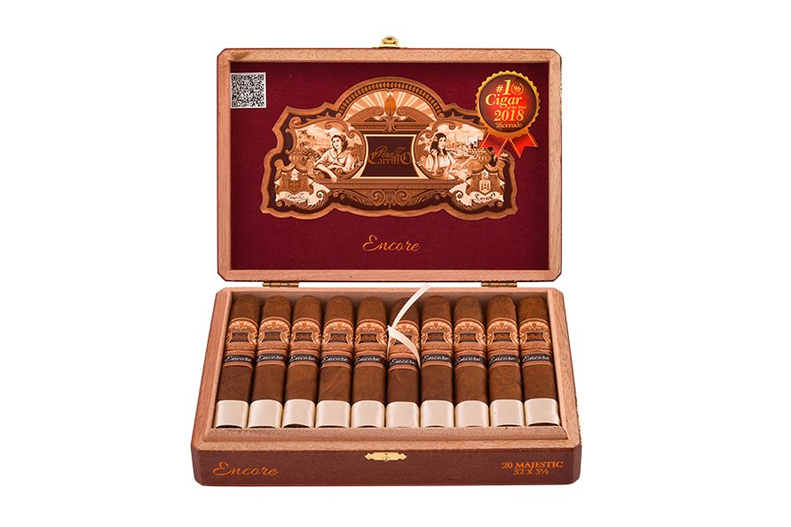
第3作 プレッジ（Pledge）（2020年）。「誓い」という名は、家族に宛てたものではありませんでした。名前は2019年の CA Big Smoke Las Vegas でブースを訪れた消費者たちの意見から選ばれ、ブランド側の説明は「すべての葉巻喫煙者へのオマージュ」。家族のシリーズの掉尾を飾る一作が、名付けの主語を「吸い手」に開いたのです。その プレクエル が Top 25 of 2020 の第1位・98点。CA はこれを「当時までの第1位で最高得点」とし、「3年間で2度目の Cigar of the Year」と記しました。3年の間に第1位を二度獲った作り手は、2004年以降の一覧で パドロン（2007・2009）とカリージョ（2018・2020）だけです。なお98点の第1位はその後、2022年と2024年にも出ており、現在は「最高タイ」が正確な表現になります。

◆ 七、三度目の握手 ― 売った王国が、もう一度ドアを叩いた
彼の工場は、他人の物語の舞台でもあり続けました。2011年、前弾の クラウンデッド・ヘッズ のデビュー作 フォー・キックス は、彼にとって初めての他社ブランド製造でした。駆け出しのブランドにとって「カリージョに作ってもらえた」こと自体が箔になり、その後も ヘッドリー・グランジ、ル・カレーム、そして2024年の コロネータ（マデューロ）まで、彼の工場は現役の製造パートナーであり続けています。工場は専門誌の年間表彰で「最優秀小規模工場（2018）」に選ばれたとも報じられました。
 フォー・キックスの箱。前弾の主人公たちの出発点は、この工場でした（写真：World Fine Rare）ここで、前弾の主人公との小さな符合に触れておきます。フォー・キックスの注文主 ジョン・ヒューバー も、かつてジャズバンドでドラムを叩いていたと専門誌 Halfwheel は伝えます。ただし、格は違います。ヒューバーの本職はフィットネスであり、ドラムは彼の音楽好きの原点という位置づけです。プロを夢見て25歳でニューヨークへ渡ったカリージョとは、同じ楽器でも重さが違う。その違いを落とさずに記すなら、この符合は二つの特集を静かに結ぶ糸になります。
フォー・キックスの箱。前弾の主人公たちの出発点は、この工場でした（写真：World Fine Rare）ここで、前弾の主人公との小さな符合に触れておきます。フォー・キックスの注文主 ジョン・ヒューバー も、かつてジャズバンドでドラムを叩いていたと専門誌 Halfwheel は伝えます。ただし、格は違います。ヒューバーの本職はフィットネスであり、ドラムは彼の音楽好きの原点という位置づけです。プロを夢見て25歳でニューヨークへ渡ったカリージョとは、同じ楽器でも重さが違う。その違いを落とさずに記すなら、この符合は二つの特集を静かに結ぶ糸になります。
そして2025年、円環が閉じます。STG／フォージドの ラ・グロリア・クバーナ の新作 ロス・グロリオーソス（Los Gloriosos） を、彼が自分の工場でブレンドして作ったのです。Halfwheel はその構図をこう評しました。「STG が自社のラ・グロリア・クバーナに命を吹き込みたいなら、引くことのできる光るレバーが常に1つあった。E.P.C. だ」。声をかけたのは、買い手の側でした。実は退社後も縁は切れておらず、2014年には古巣ゼネラルとの協業ラインも出ています（2017年の協業ラインは小売側の記録に基づく）。だから2025年のこれは、「26年ぶりの帰還」というより、三度目の握手と見る方が正確でしょう。価格も話題でした。トロ $8.99（約¥1,420）という、彼の名の葉巻としては異例の手頃さで、CA から92点を与えられたと報じられています。
発表前の極秘プロジェクトは、普通は隠すものです。しかし Halfwheel のレビュアーが2025年2月にプロシガー（業界祭典）の見学で工場を訪れたとき、ロス・グロリオーソスの箱は工場内に置かれていて、彼は隠そうともせず、立ち止まって箱を開けて見せたといいます。そして2025年4月の見本市 PCA では、彼の会社のブースがフォージドのブースの隣に並び、彼は頻繁にフォージド側へ顔を出して、自ら売り込んでいました。売ったブランドのブースに立つ73歳。その姿は、報道する側にとっても強い絵だったようです。

会社の形も変わりました。2024年2月に工場名が カサ・カリージョ（Casa Carrillo） となり、2025年4月には会社全体がその名にリブランドされました。「カサ＝家」。E.P. Carrillo のブランド名は存続し、家の名がそれらを束ねます。経営の実務では、娘リセットの存在感が増しています。彼女が自らブレンドした ラ・ヒストリア・シルク は2025年に生まれ、2026年には慈善企画として再発売され、その企画を提案したのは15歳の姪だったと報じられています。四世代目が、もう顔を出しているのです。2026年の PCA でも新作が発表され、ロス・グロリオーソスにはイベント限定のサロモンも加わりました。70代半ばの今も、彼は工場とブースの最前線に立っています。
◆ 日本編 ― 日本で「普通に買える」巨匠
前弾の クラウンデッド・ヘッズ は、日本では認可6品目が一つの窓口から届くブランドでした。カリージョの景色は対照的です。当編集部の日本葉巻データベースでは、E.P. Carrillo は全53銘柄。そのうち27銘柄が国内販売を確認済みで、販売は 大越酒店 さんと AUN Smoke さんに集中し、価格は財務省の認可定価と一致しています。
何よりの事実はこれです。彼の代表作三部作が、3本とも日本で買えます。アンコール・マジェスティック ¥5,000、プレッジ・プレクエル ¥4,300、ラ・ヒストリア E-III ¥5,100（いずれも大越酒店さん）。2018年と2020年の年間第1位が、輸入の苦労なしに、国内の棚から手に取れる。第7弾・第8弾と続いた「日本ではまだ遠い巨匠たち」の物語は、ここで初めて裏返ります。しかも顔ぶれは三部作だけではありません。ニカラグアのオリーバの工場で作られる「友情のライン」アリージェンス は4サイズすべてが販売確認済みで、極太の INCH も認可11銘柄のうち4銘柄が国内に届いています。
| 品目 | 国内価格 | 販売店 | 備考 |
|---|---|---|---|
| ラ・ヒストリア エル・セナドール 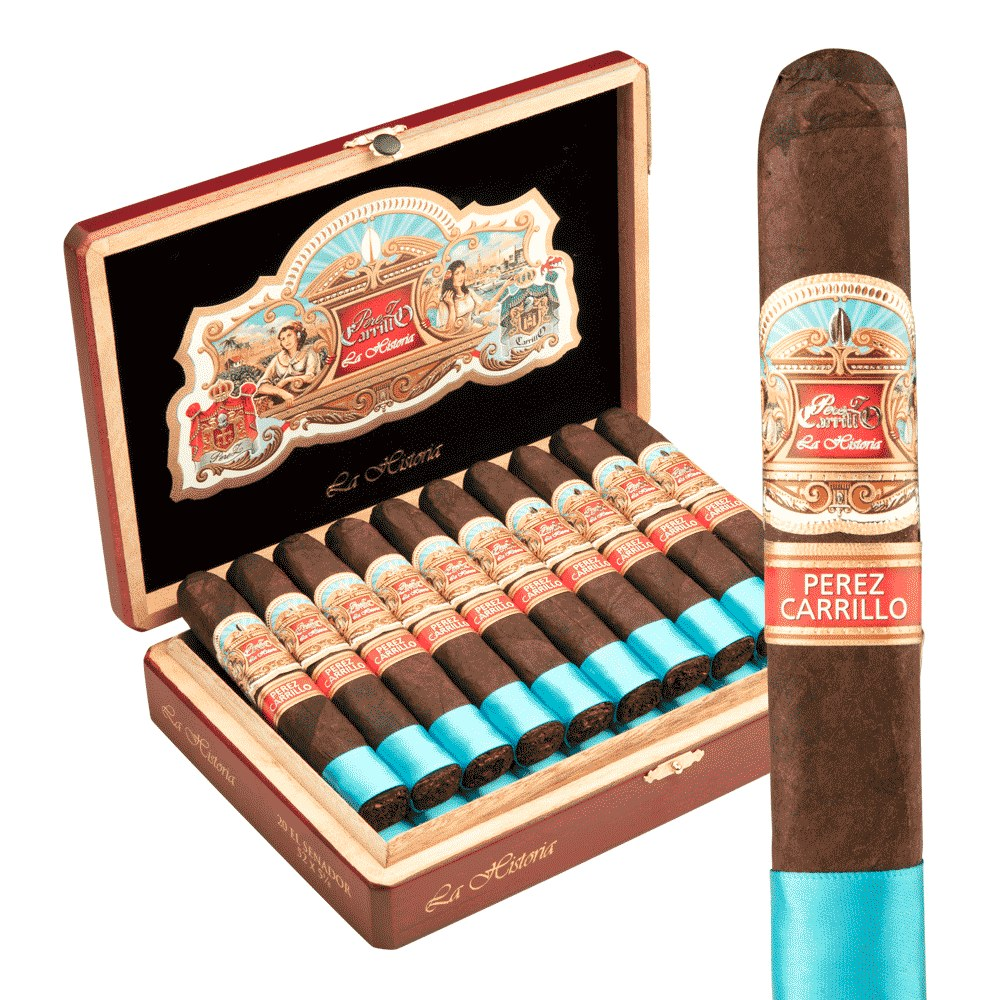 | ¥4,600 | 大越酒店 さん／AUN Smoke さん | 父への献辞のサイズ |
| ラ・ヒストリア ドーニャ・エレーナ 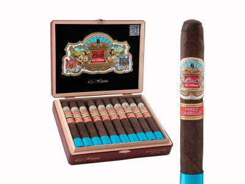 | ¥4,800 | 大越酒店 さん | 妻エレーナへの献辞 |
| ラ・ヒストリア E-III | ¥5,100 | 大越酒店 さん | CA 2014年 第2位・95点 |
| ラ・ヒストリア レガリアス・デ・セリア 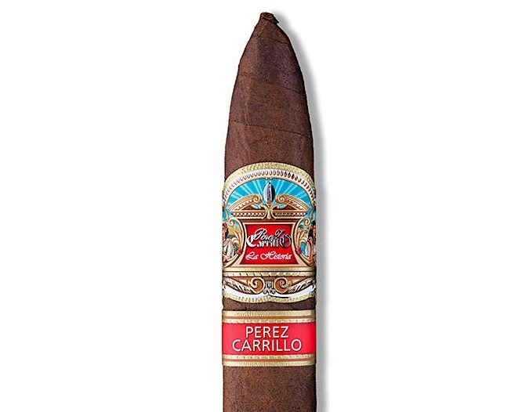 | ¥5,000 | 大越酒店 さん | 妻の祖母への献辞 |
| アンコール・マジェスティック | ¥5,000 | 大越酒店 さん | CA 2018年 第1位・96点 |
| アンコール・セレスティアル 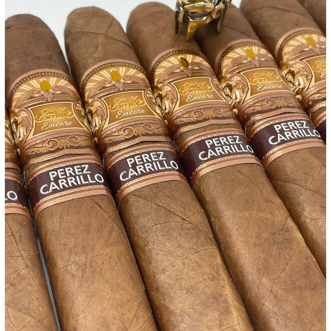 | ¥4,800 | 大越酒店 さん | 孫たちにちなむサイズ名 |
| アンコール・エル・プリメーロ 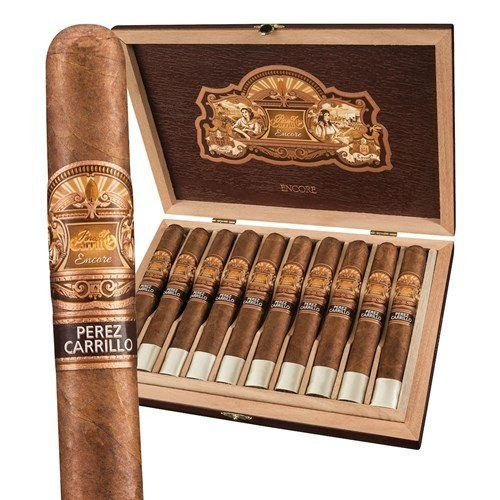 | ¥5,300 | 大越酒店 さん | |
| アンコール・エル・フトゥーロ 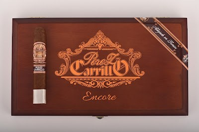 | ¥4,400 | AUN Smoke さん | |
| プレッジ・プレクエル | ¥4,300 | 大越酒店 さん | CA 2020年 第1位・98点 |
| プレッジ・ソジャーン 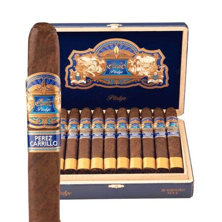 | ¥4,900 | 大越酒店 さん | |
| プレッジ・アポジー 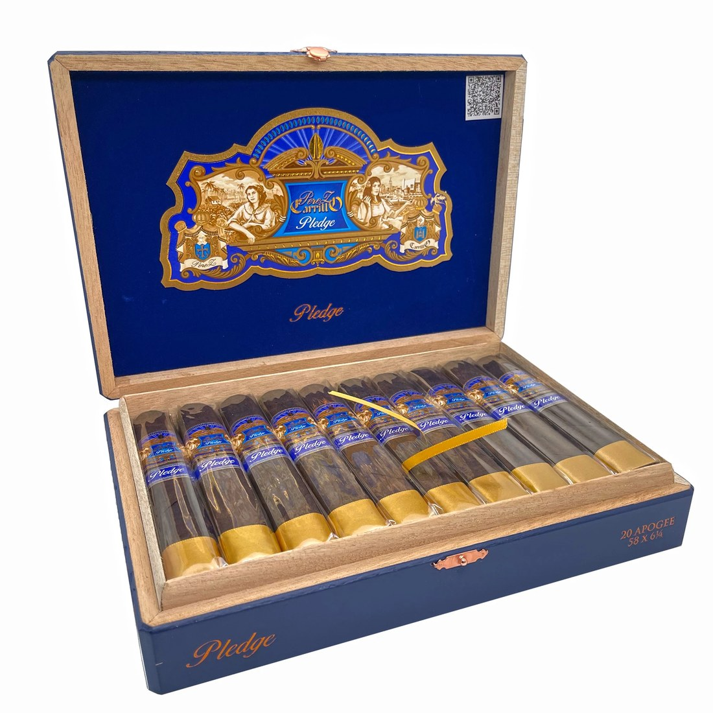 | ¥6,000 | 大越酒店 さん | |
| アリージェンス・サイドキック 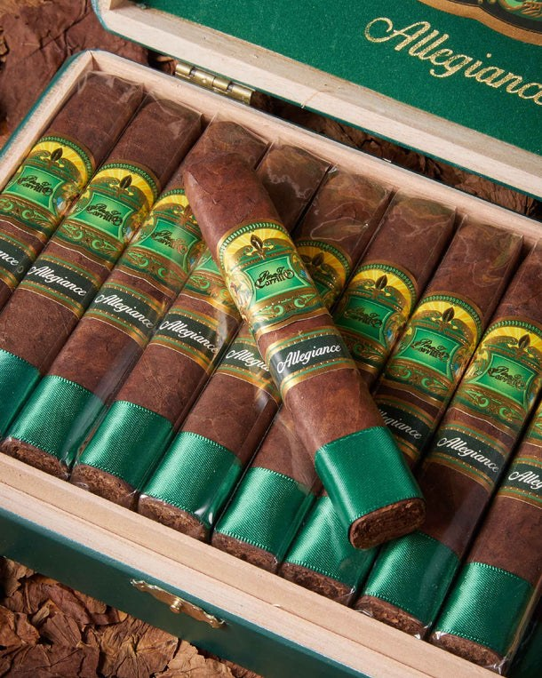 | ¥4,800 | 大越酒店 さん／AUN Smoke さん | オリーバ工場製の「友情のライン」 |
| アリージェンス・シャペローン 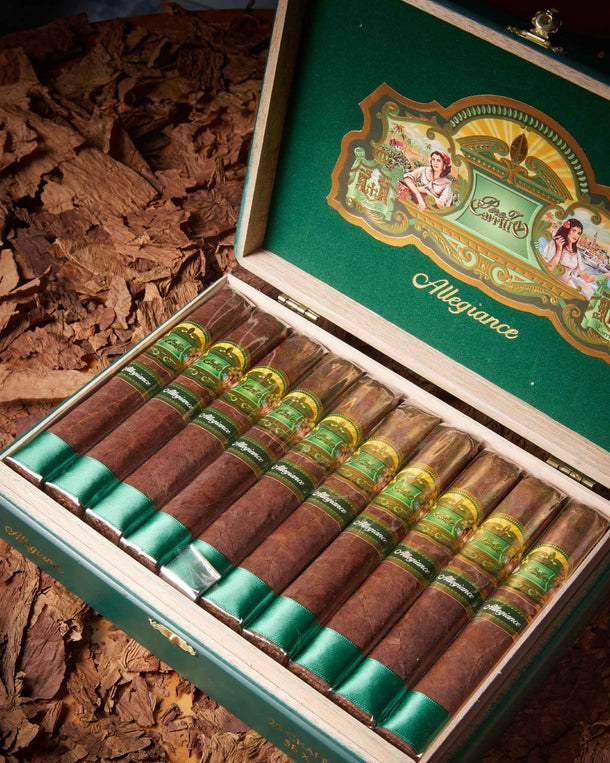 | ¥6,100 | 大越酒店 さん | |
INCH No.64 ニカラグア | ¥5,200 | 大越酒店 さん | 64リングの極太 |
| ニューウェーブ・コネチカット エル・デカーノ 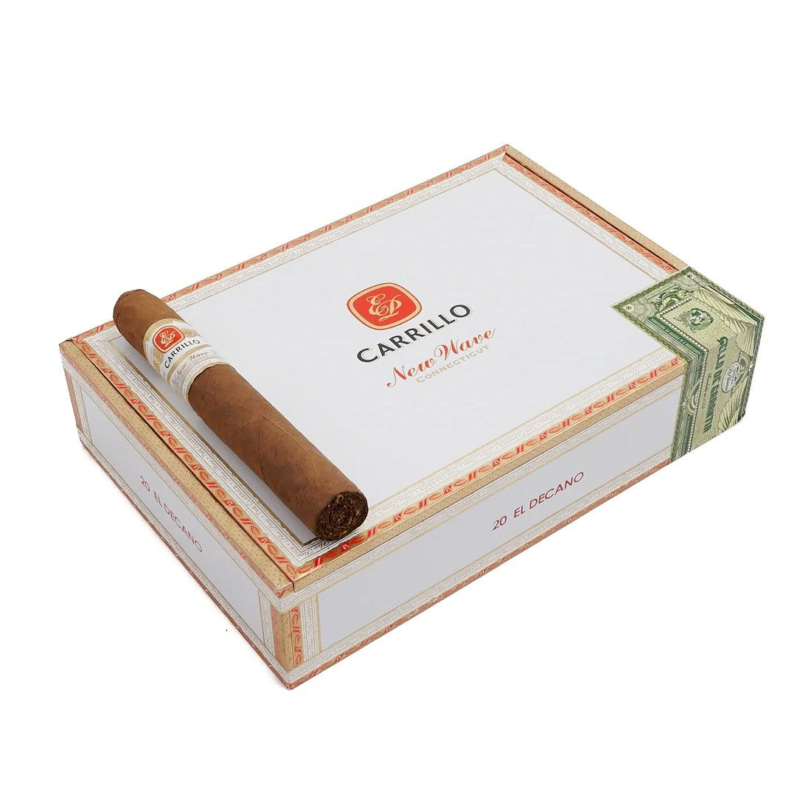 | ¥4,100 | 大越酒店 さん | 手頃な日常の一本 |
そして、日本編の締めは「まだ届いていない波」です。2025年の話題作 エンデュア と、ラッパーを主役にする エッセンス・シリーズ（計14銘柄）は、2026年6月18日付で認可が下りたばかりで、データベース上はまだ販売未確認。「次の上陸」を待つ楽しみが、この巨匠には残されています。
◆ 九、ラインの系譜 ― 半世紀のブレンドの地図
| ライン（デビュー） | 製造 | ラッパー | 備考・評価 |
|---|---|---|---|
| ラ・グロリア・クバーナ（米国版、1972） | エル・クレディト（当時） | エクアドル・スマトラ | 父が開始し、息子の新レシピが開花 1992年 ウェイベル 90点、ブームの火付け役 |
| セリエ R（1999） | エル・クレディト | ― | 60リングの先駆け ゼネラル時代の大ヒット、太リングの潮流に |
エディシオン・イナウグラル 2009 | タバカレラ・ラ・アリアンサ | エクアドル・ハバノ | EPC の第一弾、二重バインダーの実験作 15万本の限定生産 |
| ラ・ヒストリア（2014） | タバカレラ・ラ・アリアンサ | メキシコ・サンアンドレス | 家族の名を刻んだ三部作の第1作 E-III が CA 2014年 第2位・95点 |
| アンコール（2018） | タバカレラ・ラ・アリアンサ | ニカラグア（プーロ） | テルシオ熟成の葉、孫たちにちなむサイズ名 マジェスティックが CA 2018年 第1位・96点 |
| プレッジ（2020） | タバカレラ・ラ・アリアンサ | コネチカット・ブロードリーフ | 「すべての喫煙者へのオマージュ」 プレクエルが CA 2020年 第1位・98点 |
| INCH | タバカレラ・ラ・アリアンサ | ラインにより異なる | 60リング超の極太ライン セリエ R の太リング志向の直系 |
| ニューウェーブ・コネチカット 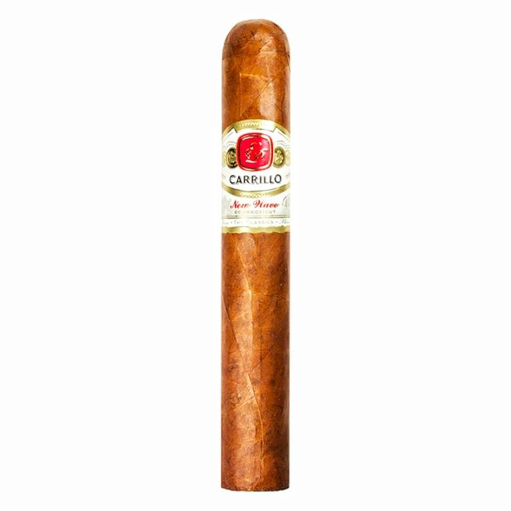 | タバカレラ・ラ・アリアンサ | コネチカット | マイルドな日常のライン 国内では ¥2,100〜 の認可サイズも |
| アリージェンス（2022） | オリーバ（ニカラグア） | ― | 自社工場ではなく友人の工場で作る「友情のライン」 日本では4サイズ全て販売確認済み |
エンデュア（2025） | カサ・カリージョ | カメルーン（メーラプフェル家） | フットバンドに葉の供給者名を記す試み 日本は2026年認可・上陸待ち |
エッセンス・シリーズ（2024〜） | カサ・カリージョ／提携工場 | ブレンドごとに異なる | 「ラッパーを主役にする」6ブレンド構想 日本は2026年認可・上陸待ち |
| ロス・グロリオーソス（2025） | カサ・カリージョ | エクアドル・ハバノ | STG／フォージドのために古巣ブランドを製造 「三度目の握手」の一本 |
◆ 結び ― アンコールは、まだ終わらない
議員の息子は亡命し、ドラマーを夢見て、夢破れて葉巻に戻りました。王国を築き、売り、残り、57歳で自分の名を掲げ直して、60代で頂点を二度獲り、74歳で売った王国に三度目の握手を交わしました。コンサートの最後の1曲のはずだった「アンコール」は、本編そのものになってしまった。娘の名付け通りです。
最後に、第10弾への橋を一つだけ。いまから四半世紀ほど前、マイアミの彼の工場に、12歳の少年が連れて来られました。喫煙を見つかった少年への「懲らしめ」として、義兄が10インチの極太の一本を吸わせたのです。狙いは、気分が悪くなって二度と吸いたくなくなることでした。ところが少年は、それを全部吸い切って、葉巻に恋をしてしまった。その少年の名は ロバート・コールドウェル。後に彼は自分のブランドを興し、巨匠との共作まで果たすことになります。工場はドラマーを育てただけではなく、次の世代の反逆者まで生んでいたのです。――その物語は、また次回。